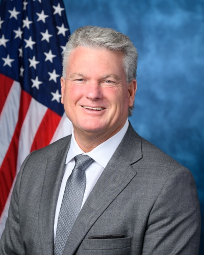

| 최신 여론조사 | ||||||
| 최신순 · 15건 · 양수 = 민주 우위(D+) | ||||||
| 조사기관 | 실사기간 | 모집단 | 표본 | 결과 | 마진 | 비고 |
|---|---|---|---|---|---|---|
| ActiVote | 2026-10-06 ~ 2026-10-20 | LV | 400 | Ossoff 54 – 46 Collins | D+8 | VoteHub 경유(원출처 URL) |
| Quantus Insights | 2026-10-15 ~ 2026-10-17 | LV | 755 | Ossoff 51.8 – 44.9 Collins | D+6.9 | VoteHub 경유(원출처 URL) |
| University of Georgia School of Public and International Affairs | 2026-10-07 ~ 2026-10-15 | LV | 1000 | Ossoff 48 – 40 Collins | D+8 | VoteHub 경유(원출처 URL) |
| Trafalgar Group | 2026-10-07 ~ 2026-10-09 | LV | 1101 | Ossoff 51 – 43 Collins | D+8 | 일일 브리핑 ? 추출·1차 출처 보강(10/13) · Undecided 5.9. MoE 2.9. No sponsor stated. Released 2026-10-10. Verified from Trafalgar PDF via pdftotext. |
| Wedgewood Polls | 2026-10-02 ~ 2026-10-03 | LV | 600 | Ossoff 55 – 45 Collins | D+10 | VoteHub 경유(원출처 URL) |
| InsiderAdvantage | 2026-09-22 ~ 2026-09-23 | LV | 1200 | Ossoff 50 – 42 Collins | D+8 | _NIS 상원 주간 2026-09-27 §4·9/25 보도·공화 성향 하우스로 분류(기존 행 관행)·조사기관 대표 타워리 "콜린스에게 심각한 도전" |
| Big Data Poll | 2026-09-21 ~ 2026-09-23 | LV | 678 | Ossoff 55.4 – 44.6 Collins | D+10.8 | VoteHub 경유(원출처 URL) |
| YouGov | 2026-09-15 ~ 2026-09-18 | RV | 3447 | Ossoff 51 – 41 Collins | D+10 | 일일 브리핑 09/24 추출 |
| Quantus Insights | 2026-09-14 ~ 2026-09-16 | LV | 645 | Ossoff 48.2 – 44.4 Collins | D+3.8 | ±4.3·_NIS 상원 주간 2026-09-20 §4·9/18 공개·완전 배분 시 49.0–44.9·65세 이상 콜린스 +14, 교외 오소프 +4·켐프 지지(9/14) 당일 실사 개시 · 하우스 성향 공화계(후원자 없음 — partisan은 의뢰 당파만, 2026-10-13 정리) |
| Trafalgar Group | 2026-09-10 ~ 2026-09-12 | LV | 1091 | Ossoff 49.4 – 42.8 Collins | D+6.6 | ±2.9·일일 브리핑 09/16 추출(언급 2회)·원문 대조 일치·공화 성향 하우스; 자유당 버클리 1.3%, 미결정 6.5% |
| Quantus Insights | 2026-09-09 ~ 2026-09-12 | LV | 624 | Ossoff 38 – 38 Collins | D+0 | ±3·일일 브리핑 09/16 추출(언급 2회)·원문 대조 일치·공화 성향 하우스; 미배분 약 24%. 2026-09-09 브리핑은 검색에 뜨던 같은 날짜대의 'Quantus 9/9~12' 동률 조사를 '물리적으로 불가능하며 2025년 조사로 추정, 사용 금지'라 경고했으나, 이후 9/16 Newsweek 보도로 실제 2026년 조사로 확인된 것으로 보임 — 두 기록이 동일 조사를 가리키는지는 미확인 |
| InsiderAdvantage | 2026-08-16 ~ 2026-08-17 | LV | 800 | Ossoff 50 – 43 Collins | D+7 | ±3.46·문자+온라인 패널·연령/인종/성별/정당 가중·미결정 7%·같은 조사 주지사는 동률(InsiderAdvantage는 공화계 성향 지적 있음) |
| ★ AARP/Fabrizio·Impact | 2026-07-13 ~ 2026-07-16 | LV | 1060 | Ossoff 52 – 43 Collins | D+9 | 유력투표층 |
| Wick Insights | 2026-06-27 ~ 2026-06-30 | LV | 1175 | Ossoff 46.7 – 42.9 Collins | D+3.8 | ±2.9·일일 브리핑 07/21 추출(언급 5회)·원문 대조 일치·원문 표기는 'Wick Research'; 정확한 조사기간(6월 중 특정일) 미기재 |
| ★ Fox News/Beacon·Shaw | 2026-06-23 ~ 2026-06-27 | RV | 1002 | Ossoff 56 – 43 Collins | D+13 | |
| 출처 URL은 `data/senate_polls.csv`에 행별로 보관합니다. 당파 후원(D/R 성향) 조사는 공개 선택 편향이 있으니 단일 조사보다 여러 조사의 방향을 함께 보세요. 표는 데이터에서 자동 렌더되며 새 조사가 들어오면 갱신됩니다. ★ = 주목 기관(NYT/Siena·Fox News·Marist·AARP) — 추이 그림에서도 큰 점으로 표시합니다. | ||||||
| 이번 주 판독 — **SLF가 조지아 예약 $760만을 취소했다**(AdImpact·AJC) — 전주의 '철수' 보도가 집행으로 확정됐다. 조기투표 첫 주 79.6만 표+(10/30 종료). 트럼프는 10/16 돌턴에 이어 10/24 페리 유세를 예고했고(당초 메이컨에서 변경), 오바마–오소프 'United for Georgia'가 10/28 애틀랜타에서 열린다. 우파 로컬 매체 보도는 주간 내내 미수집이다. | ||||||
조지아 Georgia
민주당의 최우선 방어석입니다. 2021년 결선에서 1.2%p 차로 당선된 초선 현직 Jon Ossoff(민주)에게 트럼프계 연방하원의원 Mike Collins(공화)가 도전합니다. 조지아는 2020년 바이든이 0.2%p로 이기고 2024년 트럼프가 약 2%p로 되찾은 분할투표의 주로, 메트로 애틀랜타 교외의 민주화와 농촌의 공화 결집이 맞서는 구도입니다. 현직의 압도적 자금 우위와 공화당의 통합 속도, 흑인·교외 유권자의 투표율이 승부를 가릅니다.
Ossoff (D·현직) vs Collins (R) · GA
민주 방어Cook Likely D 10-23Sabato Likely D 10-15IE Lean D 10-23Kalshi 민주 95¢ 10-25
조사 마진 추이 (양수 = 민주 우위 · 속 빈 점 = 당파 후원 조사)
데이터 기준 2026-10-25
- 여론조사 10-25 — 이월: UGA SPIA/AJC(10/7–15; LV 1,000명; ±3.1) 오소프 48, 콜린스 40. AJC의 10/22 정정 내용을 읽지 못해 잠정치다 · Decision Desk HQ(이달 발표) 오소프 52–43(Action Network 10/16). 조사 기간·표본 미확인으로 집계에서 뺐다.
- 판단 10-25 — 원문은 조지아에 대해 새 판단을 내놓지 않았다. 주요 조사인 AJC 조사는 정정 내용이 확인되지 않아 격차가 잠정치로 남는다. 마지막 주 변수는 10/24 트럼프 유세와 10/28 오바마 유세의 실제 개최 여부, 그리고 10/30 조기투표 종료다.
구도: 민주 최우선 방어석 — 현직 Ossoff(D, 초선) vs Collins(R, 연방하원·트럼프계).
구조 변수: 분할투표 주(2020 바이든 +0.2, 2024 트럼프 약 +2)에서 현직의 자금 우위 대 공화 통합. 메트로 애틀랜타 교외 대 농촌.
한국 함의: 11개 감시주 중 한국 직접 관여가 가장 풍부(현대차 메타플랜트·SK온·한화큐셀 투자, Partner with Korea Act·현대차 단속 대응).
이번 주 변수 주간 10-25 — SLF 조지아 예약 $760만 취소 — AJC/UGA 오소프 48–40, 조기투표 첫 주 79.6만+
로컬 상황 — 일일 기록
로컬 상황 · 일일 정리본에서 날짜별 누적 · 같은 사안은 처음 본 날짜로 한 번
- 10-25 이월: Georgia Recorder(좌, States Newsroom)의 10/13 GPB 토론 보도. 이민, 이란, 콜린스 전 비서실장 관련 하원 윤리위 조사가 쟁점이었다 · 조기투표 첫 주 79만 6천 표 이상(AJC), 10/30 종료 · 우파 로컬 기사는 읽지 못했다(Georgia Star News 우 ⚠ 미확인). 한쪽 시각이다 · 유세: 2026-10-24 · 페리(앞선 공지: 메이컨) · 도널드 트럼프(공화) → 마이크 콜린스 · 예고됨, 개최·장소 미확인 · 유세: 2026-10-28 · 애틀랜타 일대 · 버락 오바마(민주) → 존 오소프 · 예고됨.
- 10-24 첫 주 사전투표 79만 6천 표 이상(AJC), 10/30 종료 · 이월: 10/13 GPB 토론에서 콜린스 전 비서실장 관련 하원 윤리위 조사 등을 두고 충돌 · 유세: 10/24 · 페리(앞선 안내 메이컨) · 트럼프(공화) → 콜린스 · 저녁 예고 · 유세: 10/28 · 애틀랜타 일대 · 오바마(민주) → 오소프 · 장소 미정 · 유세: 10/16 · 돌턴 · 트럼프(공화) → 콜린스·릭 잭슨 · 오소프 공격(Daily Signal 우)
- 10-23 유세: 10/24 · 페리 · 도널드 트럼프(공화) → 마이크 콜린스/조지아 공화당 · 야간 유세, 메이컨에서 변경(Rough Draft Atlanta 10/22) · 유세: 10/28 · 애틀랜타 · 버락 오바마(민주) → 존 오소프(키샤 랜스 보텀스와 함께) · 장소 미공개(Rough Draft Atlanta 10/22) · Georgia Star News(우 ⚠)는 읽지 못함.
- 10-22 사전투표 첫 3일 약 52만 9천 표(WRDW) · 유세: 2026-10-28 · 애틀랜타권 · 버락 오바마(민주) → 존 오소프 · 키샤 랜스 보텀스 동행 예정 · 유세: 2026-10-16 · 조지아 · 도널드 트럼프(공화) → 조지아 공화당 후보 · 헤드라인만 확인, 장소·콜린스 참석 여부 미확인(Georgia Recorder 좌).
- 10-21 조기투표는 10/30까지 계속된다 · 이월: 조기투표 첫날 기록적 투표(18만 명 이상)는 10/20 브리핑에서 이월 · 유세: 2026-10-14 · 애틀랜타 · JD 밴스(공화) → 마이크 콜린스 · 이월(재확인 안 됨, 제목만 확인) · 유세: 2026-10-28 · 애틀랜타 · 버락 오바마(민주) → 존 오소프 · 예정
- 10-20 조기투표 10/30 종료, 선거일 11/3 · 제목만 확인(미열람): Daily Signal(우) “Collins Gears Up as Early Voting Commences, Vance Visits Atlanta”(10/14) · 유세: 2026-10-14 · 애틀랜타 · JD 밴스(공화) → 마이크 콜린스 · 조기투표 주간 방문, 내용 미확인(제목만, Daily Signal 10/14) · 이월·재확인 못함: 2026-10-28 · 애틀랜타 · 버락 오바마(민주) → 존 오소프 · “United for Georgia Rally”(예고) · 카멀라 해리스(민주) “이달 말” 방문(날짜 미정)
- 10-18 Daily-Tribune/Chatsworth Times(현지지, 성향 미평가)에 따르면 격납고에 수천 명이 모였다. 트럼프는 조기투표(10/30까지)를 독려했고 “한 번 이겼고, 두 번째도 이기겠다”고 말했다. 콜린스 발언 인용은 없다 · 유세: 2026-10-16 · 돌턴 · 도널드 트럼프(공화) → 마이크 콜린스(및 주지사 후보 릭 잭슨) · 공항 격납고 집회. 오소프를 공격하고 조기투표와 5,000달러 지급 공약을 내세웠으며, 군중 규모는 “수천 명”(Daily-Tribune)이고 Newsweek는 인원을 적지 않았다 · 이월: 유세: 2026-10-14 · 애틀랜타 · JD 밴스(공화) · 예고(Atlanta News First) · AJC, Georgia Recorder(좌), Georgia Star News(우 ⚠)는 읽지 못했다.
- 10-17 조기투표 10/13~10/30 · 지난주 토론에서 콜린스는 트럼프를 강하게 옹호했고 오소프는 둘 다 비판했다(Atlanta News First) · 유세: 2026-10-16 · 돌턴 · 도널드 트럼프(공화) → 마이크 콜린스(및 릭 잭슨) · 돌턴 시립공항 집회, 관중 미보도 · 유세: 2026-10-14 · 애틀랜타 · JD 밴스(공화) · 하츠필드-잭슨 공항 집회(예고 기사 기준).
- 10-16 이월: 2차 오소프–콜린스 토론(10/13)은 인신공격으로 흘렀다 · 사전투표는 10/13에 시작했다 · Georgia Star News(우 ⚠)와 Georgia Recorder(좌)는 읽지 못했다. 유세: 2026-10-16 · 돌턴 · 도널드 트럼프(공화) → 마이크 콜린스(릭 잭슨 주지사 후보 포함) · 돌턴 시영 공항, 시작 시각은 오후 1시 30분(Atlanta News First)과 3시(AJC) 보도가 엇갈린다. 올해 세 번째 조지아 방문이다(NewsChannel 9 · Rough Draft Atlanta · Hoodline).
- 10-15 2차 토론(애틀랜타 프레스클럽 주관, GPB 스튜디오)과 조기투표 개시가 10/13에 겹쳤다 · 오소프는 사위의 게시물 등 콜린스 주변의 백인민족주의 연루 의혹을 부인하라고 거듭 요구했다(보도된 의혹이며 확정 사실 아님) · 유세: 2026-10-16(예고, 날짜는 ’금요일’이라는 표현에서 추정) · 돌턴 · 도널드 트럼프(공화) → 마이크 콜린스 · 돌턴 시립공항 유세, 시작 시간은 1시 30분과 3시로 보도가 엇갈리며 트럼프의 2026년 세 번째 조지아 방문이다(Hoodline).
- 10-14 사전투표가 10/13 시작됐다(프롬프트 일정 기준, 공식 사이트는 재확인하지 않았다). 배경 기사에 따르면 애선스 유세(1,400여 명)에서 오소프는 유가·생활비 상승을 이란 전쟁·트럼프 정책과 연결했다. 콜린스는 오즈 CMS 청장과 요양시설을 방문해 약 2억 1,900만 달러의 연방 보건 재정을 강조했다.
- 10-13 사전투표 10/13 시작(공식 사이트 재확인 안 함) · 오늘 읽은 로컬 매체 없음(AJC 중도좌, Georgia Recorder 좌, Georgia Star News 우 미수집).
기준 2026-10-25 · 최근 12건 표시(전체 45건)
의석 현황 — 현직·공석
- 현직 재선 도전: Jon Ossoff(민주)가 2021년 1월 결선에서 당선된 초선 현직입니다. 당내 경선 없이 본선에 직행했습니다. 공석이 아닙니다. (Ballotpedia)
개관
인구·경제: 인구 약 1,100만 명(2025 추정)으로 미국에서 가장 빠르게 성장하는 주 중 하나. 주도 애틀랜타는 코카콜라·델타항공·홈디포·UPS 본사가 있는 남부 상업 수도로, 물류·미디어 제작·핀테크·사이버보안이 집약돼 있습니다. (Britannica)
정치 지형: 2020년 바이든이 0.2%p로 신승하며 1992년 이후 첫 민주 대선 승리, 같은 해 결선에서 Ossoff·Warnock이 상원 두 석을 모두 가져갔습니다. 그러나 2024년 트럼프가 약 2%p로 재탈환했고, 공화당 Kemp 주지사는 트럼프보다 높은 개인 인기를 유지하는 분할투표(split-ticket)의 주입니다. 메트로 애틀랜타 교외의 민주화 vs 농촌 결집이 승부를 가릅니다.
한국 투자의 거점: 조지아는 한국 기업 대미 투자의 최대 목적지 중 하나로, 150개 이상의 한국 기업이 제조 시설을 운영합니다. 현대차 메타플랜트(브라이언 카운티, 76억 달러 EV 공장), 현대–SK On 배터리 합작공장(바토우 카운티, 50억 달러), 한화 큐셀 태양광(달턴·카터스빌, 25억 달러), 기아 웨스트포인트 공장이 대표적입니다.
경제·인구 구성
- 인구는 2024년 추계로 약 1,094만 명입니다. (Census QuickFacts)
- 인종 구성은 2024년 기준 비히스패닉 백인 49.6%, 흑인 33.2%, 히스패닉 11.1%, 아시아계 4.9%입니다. (Census QuickFacts)
- 중위 가구소득은 2019~2023년 ACS 기준 약 74,664달러입니다. (Census QuickFacts)
- 애틀랜타 광역권 29개 카운티가 주 인구의 약 57%를 차지하고, 159개 카운티 중 124개는 농촌으로 분류됩니다. (Georgia House Rural Development Council)
- 주력 산업은 물류·운송, 항공, 자동차·첨단제조, 영화 제작, 금융입니다. Delta Air Lines, Home Depot, UPS, Coca-Cola가 대표 고용주입니다. (Metro Atlanta Chamber)
역대 선거 결과의 특징
대선 10회 — 민주 2 · 공화 8 / 상원 (class 2) 6회 — 민주 3 · 공화 3 / 상원 (class 3) 9회 — 민주 4 · 공화 5 / 주지사 10회 — 민주 4 · 공화 6 · 파랑 = 민주, 빨강 = 공화, 회색 = 무소속 · 점선 테두리 = 특별선거 · 칸에 마우스를 올리면 마진 · 출처 위키백과 개별 선거 문서(기준 2026-09-30)
- 대선은 2012년 Romney +7.8%p, 2016년 Trump +5.1%p, 2020년 Biden +0.2%p, 2024년 Trump +2.2%p였습니다. (Wikipedia 2024 · 2020)
- 연방상원은 2021년 1월 결선에서 Ossoff +1.2%p·Warnock +2.1%p, 2022년 12월 결선에서 Warnock +2.8%p로 민주가 이겼습니다. (Wikipedia 2020–21 · 2022)
- 주지사는 2018년 Kemp +1.4%p, 2022년 Kemp +7.5%p로 공화가 지켰습니다. (Wikipedia 2018 · 2022)
- 연방 선거는 1~3%p 안에서 갈리고 주지사 선거는 공화가 넉넉히 이기는 분할투표 패턴이 위 결과에 그대로 드러납니다.
주지사·주의회
- 현 주지사는 공화당 Brian Kemp입니다. 2023년 1월 2기를 시작했고 연임 제한으로 2026년에는 출마하지 못합니다. (Ballotpedia)
- 2026년 주지사 선거는 공화 Rick Jackson 대 민주 Keisha Lance Bottoms 대결입니다. Jackson은 6/16 결선에서 Burt Jones를 꺾었습니다. (Wikipedia)
- 주상원은 56석 중 공화 33·민주 23, 주하원은 180석 중 공화 100·민주 80입니다(2025년 1월 기준). 주지사까지 공화 트라이펙타입니다. (Wikipedia)
- 2026년에는 주지사·부지사·국무장관 등 주 전체 선출직과 주의회 전 의석이 연방상원과 함께 걸려 있습니다. (Wikipedia)
- 주지사 선거의 판세·조사·경과 기록은 조지아 주지사 페이지에서 다룹니다.
유권자 등록·투표율
- 등록 유권자는 약 757만 명입니다(2026년 9월 조회). 조지아는 정당 등록제가 없어 정당별 집계가 없습니다. (Independent Voter Project)
- 투표율은 2018년 56.8%, 2020년 66.2%, 2022년 51.9%, 2024년 68.3%입니다. 2022·2024년은 VEP 기준이고, 2018·2020년의 산정 기준은 미확인입니다. (U.S. Elections Project · Wikipedia 2018)
존 오소프 Jon Ossoff민주 · 현직
1987년생(39세) · 현직 상원의원 · 전 탐사보도 다큐멘터리 제작사 대표
가족 부인 Alisha Kramer(에모리대 산부인과 전문의), 2017년 결혼, 두 딸
학력 조지타운대 외교학 학사(2009), 런던정경대(LSE) 국제정치경제학 석사(2013)
경력 2017 GA-6 하원 보궐 결선 패배(48.2%) · 2021 상원 결선 당선 50.6% vs Perdue 49.4% (D+1.2)
펀드레이징 1분기 약 1,400만 달러 모금, 보유현금 3,200만 달러+ (2026 상원 후보 최다)
강점
- 현직 프리미엄·높은 인지도
- 압도적 자금력
- 가상대결서 공화 후보 상대 우위(Emerson D+3~5)
약점
- 2021년 1.2%p 신승 의석으로 구조적 취약
- 2024년 트럼프 조지아 재탈환으로 지형 우경화
정책 경제·물가 안정 · 의료 접근성 · 투표권 보호 · EV·청정에너지 제조 투자 옹호
🇰🇷 한국 함의 현대 메타플랜트 공개 지지. 2025년 9월 현대-LG 배터리 공장 ICE 단속 후 ‘미·한 정부 협력으로 공장 완공’ 균형 성명, 트럼프 EV 정책이 조지아 경제 위협이라 비판

마이크 콜린스 Mike Collins공화
1967년생(59세) · 연방 하원의원(GA-10) · 트럭운송 사업가
가족 부인 Leigh Ann(고교 연인), 자녀 3명; 부친 Mac Collins 전 하원의원
학력 조지아주립대 경영학 학사(1990)
경력 2014 GA-10 하원 결선 낙선 · 2022 GA-10 하원 당선 · 2026 공화 경선 1위(약 40.5%, 5/19) → 6/16 결선 승리 55.5% vs Dooley 44.5% → 본선 진출
펀드레이징 1분기 100만+ 달러 모금, 결선 국면 보유현금 약 230만 달러
강점
- 결선 55.5% 승리·MAGA 기반 결집력
- 트럼프 막판 지지(결선 이틀 전)
- 농촌 강세
- 부친 인지도 후광
약점
- 하원 윤리위 공금 유용 의혹 조사 중
- 극우 이미지의 교외 이탈 위험
- Ossoff 대비 자금 열세
정책 강경 보수·이민 강경 · 2020 대선 부정론(캠페인 시) · 1/6 관련자 사면 지지
🇰🇷 한국 함의 2025년 9월 현대-LG 공장 ICE 단속을 강하게 지지(‘Round em up’)하며 단속을 Ossoff 공격에 활용
공화당 결선 결과 (6/16)
5/19 1차 경선에서 과반 득표자가 없어(Collins ≈40.5%, Dooley ≈30.2%, Carter ≈25.1%) Carter가 3위로 탈락했고, 6/16 결선에서 Collins가 Dooley를 55.5% 대 44.5%로 꺾고 본선에 진출했습니다. 사실상 트럼프계(Collins) vs Kemp계(Dooley) 대리전이었는데, 1차에서 중립을 지키던 트럼프가 결선 이틀 전 Collins를 공개 지지(Kemp는 Dooley 지지)하며 승부를 갈랐습니다. 공화당이 결선까지 자원을 소모하는 동안 무경선의 Ossoff는 본선 준비에 집중해 왔습니다. (AP/ABC · The Hill)
roll-call / 입법 관심사
Jon Ossoff (D, 현역) — 상원 정보위·규칙위·세출위 소속(119대). 8개 경합주 현역·후보를 통틀어 한국 관련 직접 활동이 가장 풍부한 인물입니다.
- Partner with Korea Act 추진 — 한국 전문직 대상 E-4 비자 연 최대 15,000건 신설. 본인 보도자료에 초당적 통과 추진을 명시(단, 공동발의·표결 여부는 “working to pass” 표현만 확인 — congress.gov 확인 권장). (Ossoff 상원실)
- 상원 Korea Caucus 창설 — Sullivan(R-AK)·Schatz(D-HI)·Young(R-IN)과 공동 출범.
- 한국전 75주년 기념 상원 결의안 통과에 참여(직접 확인된 한국 관련 본회의 표결).
- DMZ 시찰 + 조지아 출신 주한미군 장병 라운드테이블, 조태용 주미대사 면담(북핵 논의), 한·한 산업분쟁 중재(조지아 Commerce의 $2.6B 배터리 공장 위협 분쟁 합의 중개), 한국계 이산가족 상봉 입법.
roll-call(본회의 표결) 자체는 한국전 75주년 결의안 외 통상·반도체·주한미군 개별 표결은 미확인 — Ossoff의 한국 관여는 대부분 입법 발의·외교 관여·투자 유치 형태입니다.
경선·본선 방식
- 과반-결선(majority-runoff) 제도: 조지아는 어떤 선거든 후보가 과반(50%+1) 에 미달하면 상위 2인이 결선에 갑니다. 2026년 본예선(5/19) 공화 상원 경선에서 과반 득표자가 없어 Collins vs Dooley 결선이 6/16로 잡혔습니다. 예선 미투표자도 결선 참여가 가능하나, 두 정당 예선 교차투표는 불가합니다. (AJC)
- 본선도 결선 가능: 조지아는 본선(11/3)에서도 과반 미달 시 결선을 치르는 드문 주로, 2020·2022 상원선거가 이 규칙으로 이듬해 1월 결선까지 갔습니다. (Georgia Recorder)
- SB 202(2021) — Kemp 주지사 2021-03-25 서명. 본선~결선 간격을 9주 → 4주로, 결선 조기투표를 3주 → 1주로 단축했고, 본선·결선 사이 신규 등록을 봉쇄했으며, 부재자 투표에 신분증 요건을 신설하고 드롭박스를 카운티당 제한했습니다. 결선까지 가는 레이스에서 공화당의 단기 통합·동원에 유리한 구조 변화입니다. (GPB · LWV)
우편·조기 투표
- 우편(부재자)투표는 사유 없이 신청할 수 있습니다. 신청은 선거일 78일 전부터 11일 전까지입니다. (Georgia.gov 부재자투표)
- 반송 용지는 소인과 무관하게 선거일 투표 마감 전까지 카운티에 도착해야 합니다. 군·해외 유권자만 선거일 소인 시 3일 이내 도착을 인정합니다. (Georgia.gov 부재자투표)
- 대면 조기투표는 선거일 4주 전 월요일에 시작해 직전 금요일에 끝납니다. 선거 전 둘째·셋째 토요일에도 열리고, 일요일 개장은 카운티 재량입니다. (Georgia.gov 조기투표)
- 2026년 본선의 조기투표는 10월 13일부터 10월 30일까지입니다. (Georgia SOS 2026 본선)
- 드롭박스는 카운티당 최소 1개를 실내에 두고, 조기투표 운영 시간에만 엽니다. (Georgia.gov 부재자투표)
- 사진 신분증 없이 온 유권자는 임시(provisional)투표를 하고 기한 안에 신분증을 제출해야 인정됩니다. 제출 기한은 공식 사이트에서 미확인입니다. (Georgia SOS 신분증 안내)
유권자 등록
- 2026년 11월 3일 본선의 등록 마감은 10월 5일입니다. (Georgia SOS 2026 본선)
- 온라인 등록이 가능하며, My Voter Page에서 등록 상태와 투표소를 확인합니다. (Georgia.gov 등록)
- 자동 등록은 2016년 9월부터 운전면허 발급·갱신 때 거부하지 않으면 이뤄집니다. 공식 사이트에서는 미확인이며 선거정책 연구기관 자료입니다. (CEIR)
- 선거 당일 등록은 허용되지 않습니다. 마감 전에 등록해야 투표할 수 있습니다. (Georgia.gov 선거일 투표)
신분 확인
- 대면 투표 때 사진 신분증을 제시해야 하는 엄격(strict) 사진 ID 주입니다. (Georgia.gov 선거일 투표)
- 운전면허증·여권·군인증 등 주·연방 발급 사진 신분증이 인정됩니다. 카운티 등록사무소에서 무료 유권자 ID 카드를 받을 수 있습니다. (Georgia SOS 신분증 안내)
- 신분증이 없으면 임시투표를 한 뒤 기한 안에 신분증을 제출해야 표가 인정됩니다. (Georgia SOS 신분증 안내)
최근 14일 · 최신 10월 25일 (일) · 원천은 상원 일일 브리핑(매일 오전 갱신)입니다. “정리본”은 발행 단계에서 고정 구조로 압축한 것(원문에 없는 수치는 넣지 않음), “원문 전재”는 브리핑을 그대로 옮긴 것입니다. 종결체가 다르고, 이후 정정된 사실이 있을 수 있습니다. 판세의 현재 값은 위 카드·표를 보세요.
10월 25일 (일) · 정리본
- Ossoff leads Collins in Georgia’s U.S. Senate race (AJC, 10/21) — 이월. UGA SPIA/AJC 조사에서 오소프가 콜린스를 앞섰다. AJC가 10/22 정정을 냈지만 그 내용을 읽지 못해 격차는 잠정치다.
- Trump will rally Georgia Republicans despite party divisions in battleground state (PBS NewsHour, 10/16) — 재확인. 10/16 달튼 유세는 콜린스와 주지사 후보 릭 잭슨이 올가을 처음 함께한 자리였다. 9월에야 콜린스를 지지한 켐프 주지사는 가족 사정을 이유로 불참했다. PBS는 콜린스의 저조한 모금과 2020년 관련 토론 발언(“의심이 많았다”)을 전했다. 오소프와 키샤 랜스 보텀스는 별도로 공동 유세를 열었다.
- 여론조사: 이월: UGA SPIA/AJC(10/7–15; LV 1,000명; ±3.1) 오소프 48, 콜린스 40. AJC의 10/22 정정 내용을 읽지 못해 잠정치다 · Decision Desk HQ(이달 발표) 오소프 52–43(Action Network 10/16). 조사 기간·표본 미확인으로 집계에서 뺐다.
- 자금: 이월: 오소프 3분기 약 3,300만 달러 모금. 10/22 선거 직전 보고 수치는 미확인이다.
- 로컬: 이월: Georgia Recorder(좌, States Newsroom)의 10/13 GPB 토론 보도. 이민, 이란, 콜린스 전 비서실장 관련 하원 윤리위 조사가 쟁점이었다 · 조기투표 첫 주 79만 6천 표 이상(AJC), 10/30 종료 · 우파 로컬 기사는 읽지 못했다(Georgia Star News 우 ⚠ 미확인). 한쪽 시각이다 · 유세: 2026-10-24 · 페리(앞선 공지: 메이컨) · 도널드 트럼프(공화) → 마이크 콜린스 · 예고됨, 개최·장소 미확인 · 유세: 2026-10-28 · 애틀랜타 일대 · 버락 오바마(민주) → 존 오소프 · 예고됨.
- 주 함의: 원문은 조지아에 대해 새 판단을 내놓지 않았다. 주요 조사인 AJC 조사는 정정 내용이 확인되지 않아 격차가 잠정치로 남는다. 마지막 주 변수는 10/24 트럼프 유세와 10/28 오바마 유세의 실제 개최 여부, 그리고 10/30 조기투표 종료다.
원천: _NIS 상원 일일 브리핑 KR(2026-10-12 ~ 2026-10-25). 추출 scripts/ingest_senate_daily.py · 렌더 daily_log_md().
이 표는
data/senate_polls.csv에서 자동 생성됩니다 — 프로즈에 수치를 박아두지 않으므로 새 조사가 수집되면 이 페이지도 함께 갱신됩니다. 단일 조사보다 여러 조사의 방향을 보세요.
조사 동향 — 일일 기록
여론조사 동향 · 일일 정리본에서 날짜별 누적 · 같은 사안은 처음 본 날짜로 한 번
- 10-25 이월: UGA SPIA/AJC(10/7–15; LV 1,000명; ±3.1) 오소프 48, 콜린스 40. AJC의 10/22 정정 내용을 읽지 못해 잠정치다 · Decision Desk HQ(이달 발표) 오소프 52–43(Action Network 10/16). 조사 기간·표본 미확인으로 집계에서 뺐다.
- 10-24 UGA SPIA/AJC(10/7–15, 투표의향자 1,000명, ±3.1) 오소프 48, 콜린스 40, 부동층 약 12% · 오소프 직무 지지 55/35.
- 10-23 신규 Trafalgar Group(공화 성향) 10/7–9, 1,101명 LV, ±2.9, 오소프 51–43(Newsweek) · 직전 Trafalgar(9/10–12) 49.4–42.8에서 오소프 격차 +1.4p · 이월: UGA SPIA/AJC(10/7–15, 1,000명 LV, ±3.1) 오소프 48–40, 부동층 약 12%, 오소프 직무 지지 55/35(AJC 중도좌) · Cook Likely D, Inside Elections 10/1 Lean D 상향.
- 10-22 AJC/UGA SPIA(10/7–15; LV 1,000명; ±3.1) 오소프 약 48–40 · Quantus Insights(10/15–17; 755명; ±3.8) 오소프 51.8–44.9, 무당층 56–35 · Pollsmax 평균(10/17 갱신) 오소프 52.0–42.7(+9.3, 20개).
- 10-21 Quantus Insights(R) 10/17(755 LV) 오소프 52, 콜린스 45 · Pollsmax 20건 평균 오소프 52.0–42.7(+9.3, 10/17 갱신; 직전 +9.2) · 이전 조사 Trafalgar(R) 10/9 오소프 +8, Wedgewood 10/3 오소프 +10 (Pollsmax)
- 10-20 Trafalgar(R) 10/9 오소프 +8(1,101명 LV) · Wedgewood 10/3 오소프 +10(600명 LV) · Pollsmax 19개 조사 평균 오소프 51.6–42.5(+9.2).
- 10-18 Trafalgar Group(보수 성향, 기간·표본 미기재)은 오소프 51–43이다 · Decision Desk HQ 평균 52–43(날짜 미표기) · RCP 평균 오소프 +8.1(10/9) · 예측시장 약 95%(Newsweek).
- 10-15 Decision Desk HQ 수치 오소프 52–43(조사 기간·표본 미상, Hoodline 경유) · 270toWin 최신은 Wedgewood(10/4) 55–45.
- 10-14 없음. 직전 조사는 Wedgewood(10/4) 오소프 55–45(600명 LV, ±4)와 YouGov(9/23) 오소프 52–42(3,303명 LV, ±2.8)다.
- 10-13 웨지우드(게재 10/4, LV 600, ±4) 오소프 55–45(270toWin) · 10/12 보고서에서 이월된 트라팔가 10/10 “오소프 51–43”은 270toWin 표에 없어 미확인으로 처리했다.
- 10-12 Trafalgar(목록일 10/10) 오소프 51–43으로 잠정치다. 10/11 보고서에 처음 나왔으며 목록 오류 가능성을 여전히 배제하지 못했다. 토론 후 여론조사는 찾지 못했다.
- 10-11 Trafalgar 10/10 오소프 51–43(미검증)이 나왔다. 이 시리즈의 이전 보도에서는 오소프가 약 4%p 앞섰다(WTOC, 9/18). 10/8 첫 토론 이후 조사는 발견되지 않았다.
기준 2026-10-25 · 최근 12건 표시(전체 23건)
최신 자금 상황 (기준 2026-10-25) — Ossoff 3분기 $33M · 현금 $26M vs M. Collins 3분기 $2.7M · 현금 $110만(원천 상원 주간 10/25) · SLF 조지아 예약 $760만 취소(AdImpact, AJC)
| FEC 분기 신고 — 사이클 누적 | ||||
| 취득 2026-10-26 · 단위 $M · 후보 본인 위원회 기준 | ||||
| 후보 | 정당 | 사이클 누적 모금 | 보유 현금 | 보고 마감 |
|---|---|---|---|---|
| 존 오소프 (Jon Ossoff) | 민주 | $136.61M | $15.13M | 2026-10-14 |
| 마이크 콜린스 (Mike Collins) | 공화 | $10.68M | $1.10M | 2026-10-14 |
| `scripts/fetch_fec_fundraising.py`가 FEC API에서 주간 취득한 원장입니다(자동). **슈퍼팩 외부지출은 포함되지 않습니다** — 이 사이클에서는 외부지출이 후보 자금보다 큰 주가 여럿이라, 위 상자의 외부지출 메모와 함께 보세요. 【수집】은 해당 후보의 FEC 신고가 아직 없다는 뜻입니다(추정으로 채우지 않음). FEC는 법적 이름으로 신고되므로 표기가 이 사이트와 다를 수 있습니다. | ||||
아래는 Q1(3/31 마감) 시점의 해설입니다 — 위 표는 FEC 원장에서 자동 렌더되는 사이클 누적치라 기준이 다릅니다.
Ossoff의 Q1 기여는 99% 이상이 $200 미만 소액(40.8만 건 이상, 평균 $38)으로, 대액 기부 의존도가 높은 공화 후보들과 대조됩니다. 무경선 현역이 결선을 치르는 공화 후보들보다 약 15배 많은 보유현금으로 광고전을 선점한 구도. (AJC · OpenSecrets)
자금 투입·지출 — 일일 기록
자금 투입·지출 · 일일 정리본에서 날짜별 누적 · 같은 사안은 처음 본 날짜로 한 번
- 10-25 이월: 오소프 3분기 약 3,300만 달러 모금. 10/22 선거 직전 보고 수치는 미확인이다.
- 10-24 이월: 오소프 3분기 3,300만 달러 모금, 현금 약 2,600만 달러 · 10/22 선거 직전 보고는 찾지 못했다.
- 10-23 3분기 오소프 모금 3,300만 달러·보유 현금 2,600만 달러, 콜린스 모금 270만 달러·현금 약 110만 달러 · 오소프는 다른 민주당 후보들에 360만 달러 이상 지원(Georgia Recorder 좌) · 공화당 전국 조직이 조지아에서 자금을 빼고 있다는 보도(AJC 중도좌).
- 10-22 SLF가 콜린스 지원에 4,400만 달러를 약속했으나 조지아 예약 760만 달러를 취소(AdImpact, AJC) · Politico는 NRSC 집중 지역에서 조지아가 빠졌다고 보도 · 오소프 막판 3,300만 달러 추가 모금 발표는 헤드라인만 확인(Georgia Recorder 좌).
- 10-18 이월: 6/30 기준 현금은 오소프 약 $42M, 콜린스 약 $2M이다(Hoodline, 10/12) · 오소프 3분기 $33M(The Well News).
- 10-17 오소프 3분기 $33M, 현금 $26M(The Well News) · 콜린스 보고서는 기사 시점에 미게재 · Punchbowl은 공화당이 조지아를 사실상 포기했다고 평가했다(Punchbowl).
- 10-16 AP는 양당 상원 지출 조직이 조지아 광고를 철회했다고 보도했다(이월). 공화당은 콜린스를 열세로, 민주당은 오소프를 안전하다고 본다는 신호다.
- 10-15 민주당 상원 지출 조직이 전주에 조지아 광고를 철회했고 공화당도 물러났다(AP via ABC News) · 호프먼은 캠프에 7천 달러, 오소프 관련 위원회에 100만 달러를 기부했다(AJC가 인용한 Fox News 보도).
- 10-14 AJC 9/13 배경 기사(중도좌)에 따르면 전국 공화당 단체는 조지아에 약 6,000만 달러를 약속했으나 거의 집행하지 않았다. 트럼프 계열 슈퍼팩은 200만 달러 이상을 예약했다.
- 10-08 SMP가 광고 시간을 확보한 9개 주에 조지아가 들어 있다(Ohio Capital Journal, 좌).
- 10-04 오소프의 큰 현금 우위가 인용됐다. 수치 기준일은 기재되지 않았다.
- 10-03 SLF의 기투입 2,590만 달러·예약 1,730만 달러. 오소프 보유현금 약 4,200만 달러 대 콜린스 약 220만 달러(현금 수치의 기준일은 명시되지 않아 근사치). Georgia Recorder
기준 2026-10-25 · 최근 12건 표시(전체 32건)
- 직접 확인: Ossoff는 위 4절의 입법·외교 활동으로 한국 통상·안보에 직접 관여해 왔습니다. 2025년 9월 현대-LG 배터리 공장 ICE 단속(475명 구금, 약 300명 한국 국적) 당시 그는 “미국과 한국 정부 간 고위급 관여로 수천 개 제조 일자리를 약속한 이 시설이 완공되도록 보장해야 한다” 며 단속 규탄보다 경제·완공 보장 프레임으로 대응했습니다(발언 전문·정확 일자는 FOX 5 원본 대조 권장). (Wikipedia)
- 대조 후크: 한국 독자에게 가장 선명한 대비는 Ossoff(미·한 협력으로 공장 완공 강조) 와 Collins(‘단속 지지’) 의 입장 차이입니다. 의석 향배보다 양당 후보의 대(對)한국 통상·이민 입장이 반도체·배터리 투자 환경에 직접 닿아 있습니다.
- 신규 동향은 Korea Watch에 누적합니다.